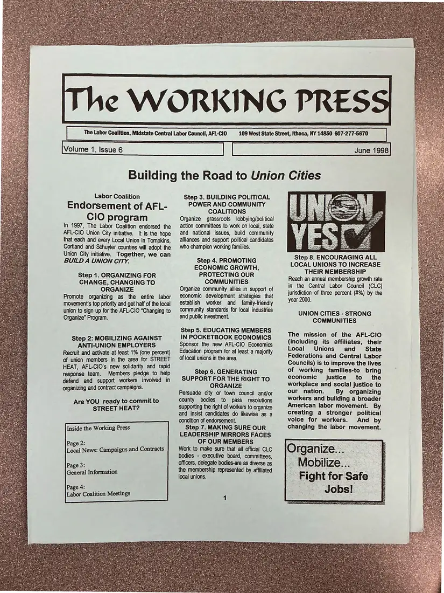
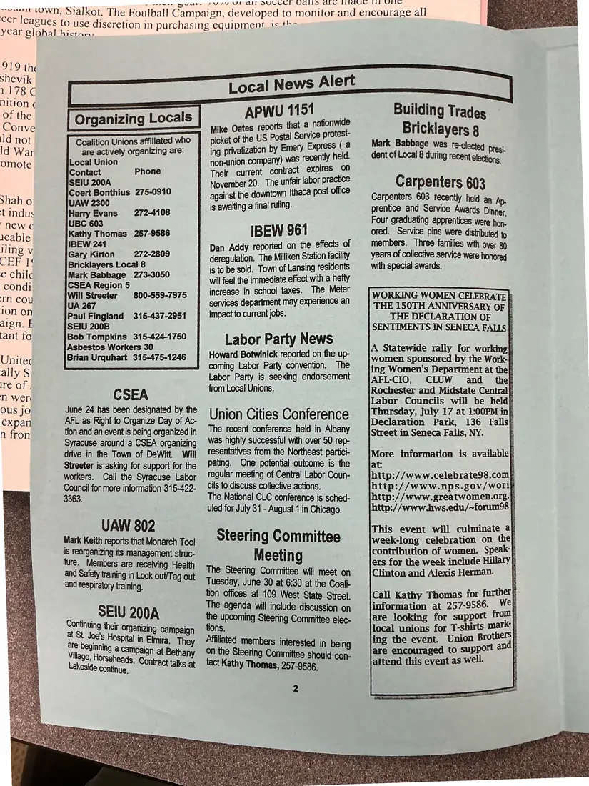
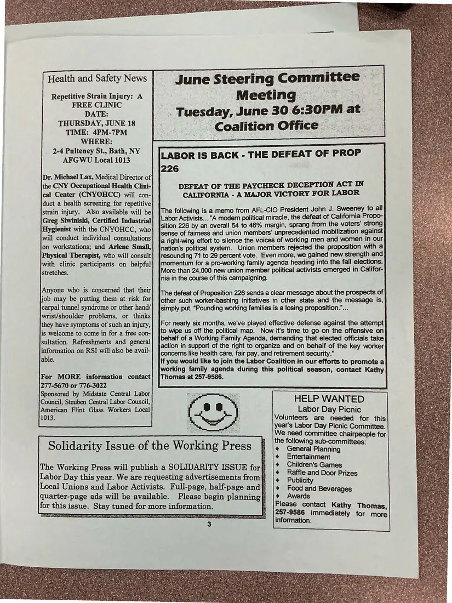
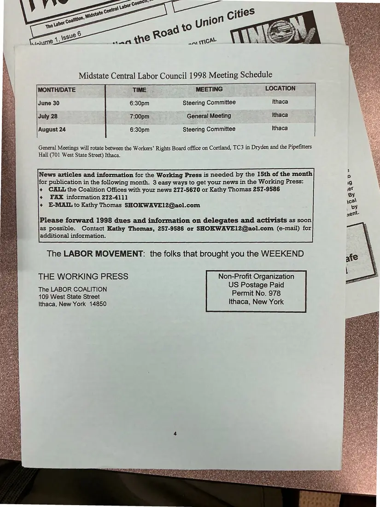

Newsletter, 4 pages
The Working Press, Volume 1, Issue 6, June 1998: “Building the Road to Union Cities”
June 1998
This issue explains the AFL-CIO Union Cities program step by step, as the Labor Coalition had endorsed it in 1997. It includes a Local News Alert on organizing locals and contracts, health and safety news, the defeat of California's Proposition 226, and the 1998 meeting schedule. The pages were photographed back-to-front and are shown in reading order.
Download or cite this itemPages


(open zoom view)Read the page text (machine-read, mostly readable)
This text was generated automatically from the photograph and has not been corrected. The image is the authoritative record.
The Labor Coalition, Midstate Central Labor Council, AFL-CIO Labor Coalition Endorsement of AFL- ClO program In 1997, The Labor Coalition endorsed the AFL-CIO Union City initiative. It is the hope that each and every Local Union in Tompkins, Cortland and Schuyler counties will adopt the Union City initiative. Together, we can BUILD A UNION CITY. Step 1. ORGANIZING FOR CHANGE, CHANGING TO ORGANIZE Promote organizing as the entire labor movement's top priority and get half of the local union to sign up for the AFL-CIO “Changing to Organize” Program. Step 2: MOBILIZING AGAINST ANTI-UNION EMPLOYERS Recruit and activate at least 1% (one percent) of union members in the area for STREET HEAT, AFL-CiO’s new solidarity and rapid response team. Members pledge to help defend and support workers involved in organizing and contract campaigns. Are YOU ready to commit to STREET HEAT? Inside the Working Press Page 2: Local News: Campaigns and Contracts Page 3: General Information Page 4: e4 Labor Coalition Meetings 109 West State Step 3. BUILDING POLITICAL POWER AND COMMUNITY COALITIONS Organize grassroots lobbying/political action committees fo work on local, state and national issues, build community alliances and support political candidates who champion working families. Step 4. PROMOTING ECONOMIC GROWTH, PROTECTING OUR COMMUNITIES Organize community allies in support of economic development strategies that establish worker and family-friendly community standards for local industries and public investment. Step 5. EDUCATING MEMBERS IN POCKETBOOK ECONOMICS Sponsor the new AFL-CIO Economics Education program for at least a majority of local unions in the area. Step 6. GENERATING SUPPORT FOR THE RIGHT TO ORGANIZE Persuade city or town council and/or county bodies to pass resolutions supporting the right of workers to organize and insist candidates do likewise as a condition of endorsement. Step 7. MAKING SURE OUR LEADERSHIP MIRRORS FACES OF OUR MEMBERS Work to make sure that all official CLC bodies - executive board, committees, Officers, delegate bodies-are as diverse as the membership represented by affiliated focal unions. Street, Ithaca, NY 14850 607-277-5670 June 1998 Step 8. ENCOURAGING ALL LOCAL UNIONS TO INCREASE THEIR MEMBERSHIP Reach an annual membership growth rate in the Central Labor Council (CLC) jurisdiction of three percent (#%) by the year 2000. UNION CITIES - STRONG COMMUNITIES The mission of the AFL-CIO (including its affiliates, their Local Unions and _ State Federations and Central Labor Councils) is to improve the lives of working families-to bring economic justice to the workplace and social justice to our nation. By organizing workers and building a broader American labor movement. By creating a stronger political voice for workers. And by changing the labor movement. Organize... - Mobilize... Jobs!


(open zoom view)Read the page text (machine-read, mostly readable)
This text was generated automatically from the photograph and has not been corrected. The image is the authoritative record.
cer leagues to use discr
year glohal hictarn,
919 the
shevik
1178 C
nition ¢
of the
Conve
ld not
ld War
omote
Shah o
t indus
new c
icable
iling v
CER
e chilc
condi
mm cou
10n on
aign. E
tant fo
Unitec
ally Si
Ire of .
TN) Weri
OUS JO
expan
n fron
waa wae wass
Organizing Locals
Coalition Unions affiliated who
are actively organizing are:
Local Union
Contact
SEIU 200A
Coert Bonthius 275-0910
UAW 2300
Harry Evans
UBC 603
Kathy Thomas 257-9586
IBEW 241
Gary Kirton 272-2809
Bricklayers Local 8
Mark Babbage 273-3050
CSEA Region 5
Will Streeter
UA 267
Paul Fingland 315-437-2951
SEIU 200B
Bob Tompkins 315-424-1750
Asbestos Workers 30
Brian Urquhart 315-475-1246
Phone
272-4108
800-559-7975
CSEA
June 24 has been designated by the
AFL as Right to Organize Day of Ac-
tion and an event is being organized in
Syracuse around a CSEA organizing
drive in the Town of DeWitt. Will
Streeter is asking for support for the
workers. Call the Syracuse Labor
Council for more information 315-422-
3363.
UAW 802
Mark Keith reports that Monarch Tool
IS Feorganizing its management struc-
lure. Members are receiving Health
and Safety training in Lock out/T ag out
and respiratory training,
SEIU 200A
Continuing their organizin
g Campaign
at St. Joe's Hospital in Elmira. They
. 7 — So rusvuvui dll SUCCC! Odllo ail 1idGe fil Ui
veer LOWN, Sialkot. The Foulball Campaign, developed to monitor and encourage all
etion in purchasing equipment 1s th=
APWU 1151 -
ike Oates reports that a nation e
ise of the US Postal Service nes
ing privatization by Emery meter C
non-union company) was recently eld.
Their current contract expires on
November 20. The unfair labor practice
against the downtown {thaca post office
is awaiting a final ruling.
IBEW 961
Dan Addy reported on the effects of
deregulation. The Milliken Station facility
is to be sold. Town of Lansing residents
will feel the immediate effect with a hefty
increase in school taxes. The Meter
services department may experience an
impact to current jobs.
Labor Party News
Howard Botwinick reported on the up-
coming Labor Party convention. The
Labor Party is seeking endorsement
from Local Unions.
Union Cities Conference
The recent conference held in Albany
was highly successful with over 50 rep-
resentatives from the Northeast partici-
pating. One potential outcome is the
regular meeting of Central Labor Coun-
cils to discuss collective actions.
The National CLC conference is sched-
uled for July 31 - August 1 in Chicago.
Steering Committee
Meeting
The Steering Committee will meet on
Tuesday, June 30 at 6:30 at the Coali-
tion offices at 109 West State Street.
The agenda will include discussion on
He upcoming Steering Committee elec-
ns.
Affiliated members interested in being
On the Steering Committee should con-
tact Kathy Thomas, 257-9586.
Building Trades
Bricklayers 8
Mark Babbage was re-clectey
dent of Local 8 during recent
Presi.
Carpenters 603
Carpenters 603 recently held an Ap.
prentice and Service Awards Dinner
Four graduating apprentices were hon.
ored. Service pins were distributed to
members. Three families with over 80
years of collective service were honored
with special awards.
WORKING WOMEN CELEBRATE F
THE 150TH ANNIVERSARY OF [
THE DECLARATION OF_
SENTIMENTS IN SENECA FALLS f
A Statewide rally for working}
women sponsored by the Work-E
ing Women’s Department at theP
AFL-CIO, CLUW and _thep
Rochester and Midstate Central
Labor Councils will be heldE
Thursday, July 17 at 1:00PM ing
Declaration Park, 136 Falls}
Street in Seneca Falls, NY. E
More information is available}
at: 3
hitp://www.celebrate98.com}
http://www.unps.gov/worie
http://www.greatwomen.org.>
http://www.hws.edu/~forum98 :
This event will culminate af
week-long celebration on the)
contribution of women. Speak-f
ers for the week include Hillary p
Clinton and Alexis Herman. fF
Call Kathy Thomas for further
information at 257-9586. Wef
are looking for support from
local unions for T-shirts mark-|
ing the event. Union Brothers
are encouraged to support ape)
attend this event as well. }

(open zoom view)Read the page text (machine-read, mostly readable)
This text was generated automatically from the photograph and has not been corrected. The image is the authoritative record.
Health and Safety News ttee Tuesday, June 30 6:30PM at Coalition Office Repetitive Strain Injury: A FREE CLINIC DATE: THURSDAY, JUNE 18 TIME: 4PM-7PM WHERE: 2-4 Pulteney St., Bath, NY AFGWU Local 1013 LABOR IS BACK - THE DEFEAT OF PROP 226 DEFEAT OF THE PAYCHECK DECEPTION ACT IN CALIFORNIA - A MAJOR VICTORY FOR LABOR Dr. Michael Lax, Medical Director of the CNY Occupational Health Clini- cal Center (CNYOHCC) will con- duct a health screening for repetitive strain injury. Also available will be Greg Siwiniski, Certified Industrial Hygienist with the CNYOHCC, who will conduct individual consultations on workstations; and Arlene Small, Physical Therapist, who will consult with clinic participants on helpful stretches. The following is a memo from AFL-CIO President John J. Sweeney to all Labor Activists...."A moder political miracle, the defeat of Califomia Propo- sition 226 by an overall 54 to 46% margin, sprang from the voters strong sense of fairness and union members’ unprecedented mobilization against a right-wing effort to silence the voices of working men and women in our nation’s political system. Union members rejected the proposition with a resounding 71 to 29 percent vote. Even more, we gained new strength and momentum for a pro-working family agenda heading into the fall elections. More than 24,000 new union member political activists emerged in Califor- nia in the course of this campaigning. Anyone who is concerned that their job may be putting them at risk for carpal tunnel syndrome or other hand/ wrist/shoulder problems, or thinks they have symptoms of such an injury, is welcome to come in for a free con- sultation. Refreshments and general information on RSI will also be avail- able. The defeat of Proposition 226 sends a clear message about the prospects of other such worker-bashing initiatives in other state and the message is, simply put, “Pounding working families is a losing proposition.”... For nearly six months, we've played effective defense against the attempt to wipe us off the political map. Now it’s time to go on the offensive on behalf of a Working Family Agenda, demanding that elected officials take action in support of the right to organize and on behalf of the key worker concerns like health care, fair pay, and retirement security.” If you would like to join the Labor Coalition in our efforts to promote a working family agenda during this political season, contact Kathy Thomas at 257-9586. For MORE information contact 277-5670 or 776-3022 Sponsored by Midstate Central Labor Council, Steuben Central Labor Council, American Flint Glass Workers Local 1013. HELP WANTED Labor Day Picnic Volunteers are needed for this year’s Labor Day Picnic Committee. We need committee chairpeople for the following sub-committees: ¢ General Planning Solidarity Issue of the Working Press B \¢ Entertainment The Working Press will publish a SOLIDARITY ISSUE forfj |* Children's Games Labor Day this year. We are requesting advertisements from | 4 Publicity. pines Local Unions and Labor Activists. Full-page, half-page and |+ Food and Beverages quarter-page ads will be available. Please begin planningf |* Awards Please contact Kathy Thomas, 257-9586 immediately for more information. for this issue. Stay tuned for more information. LE OOS TENT SPDT ITI NTT IE LTE TTI PIG AE CLP OR Fo LPR EN IT ELON ERE LOE OE EC SIG ON ty De 7 F We m, pe . 9 , he f yt 4 ¢ re? CoA Oa are Ke ion Xf 4 ace %y 2. ie Set ae a : tar hs $34 ia es is 4 ayy REGS Bs Rog % 4 te 4 at ? ay Se owe PseX Li Seuee 2 aba ey oe: baa Pa Fa Oe a. rs not 7 W ¥ core a+ 4 4 ADVE ies ry ro Ata Ste ¥ = tA *


(open zoom view)Read the page text (machine-read, mostly readable)
This text was generated automatically from the photograph and has not been corrected. The image is the authoritative record.
Midstate Central Labor Council 1998 Meeting Schedule MONTH/DATE June 30 July 28 August 24 General Meetings will rotate between the Workers’ Rights Board office on Cortland, TC3 in Dryden and the Pipefitters Hall (701 West State Street) Ithaca. additional information. TIME. 6:30pm | 7:00pm 6:30pm MEETING Steering Committee General Meeting Steering Committee LOCATION Ithaca _ Ithaca Ithaca News articles and information for the Working Press is needed by the 15th of the month for publication in the following month. 3 easy ways to get your news in the Working Press: ¢ CALL the Coalition Offices with your news 277-5670 or Kathy Thomas 257-9586 ¢ FAX information 272-4111 ¢ E-MAIL to Kathy Thomas SHOKWAVE12@aol.com Please forward 1998 dues and information on delegates and activists as soon as possible. Contact Kathy Thomas, 257-9586 or SHOKWAVE12@aol.com (e-mail) for The LABOR MOVEMENT: the folks that brought you the WEEKEND THE WORKING PRESS The LABOR COALITION 109 West State Street Ithaca, New York 14850 Non-Profit Organization US Postage Paid Permit No. 978 Ithaca, New York
See something wrong, or recognize a person or event? Send a correction. If you hold rights in this item or think it should not be public, write to the same address.